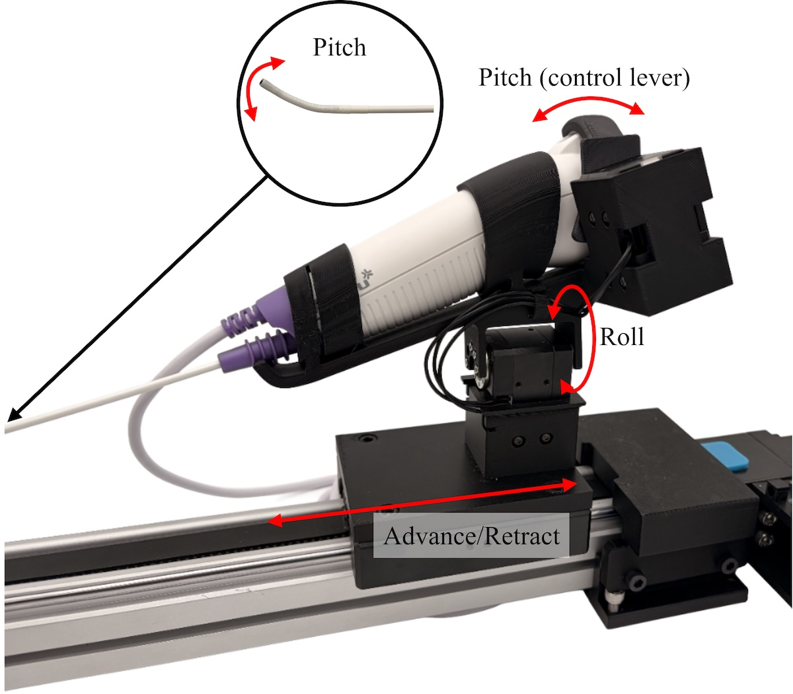
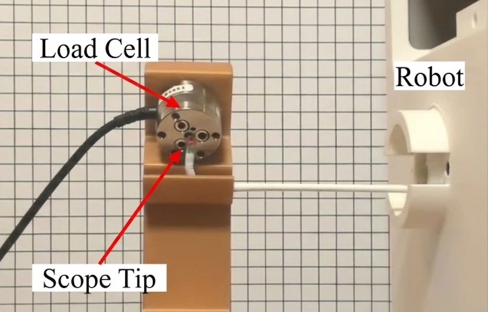
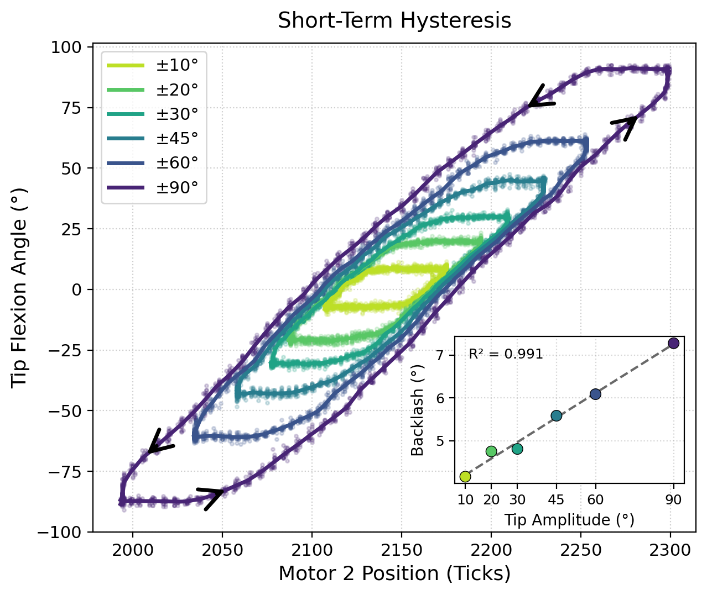
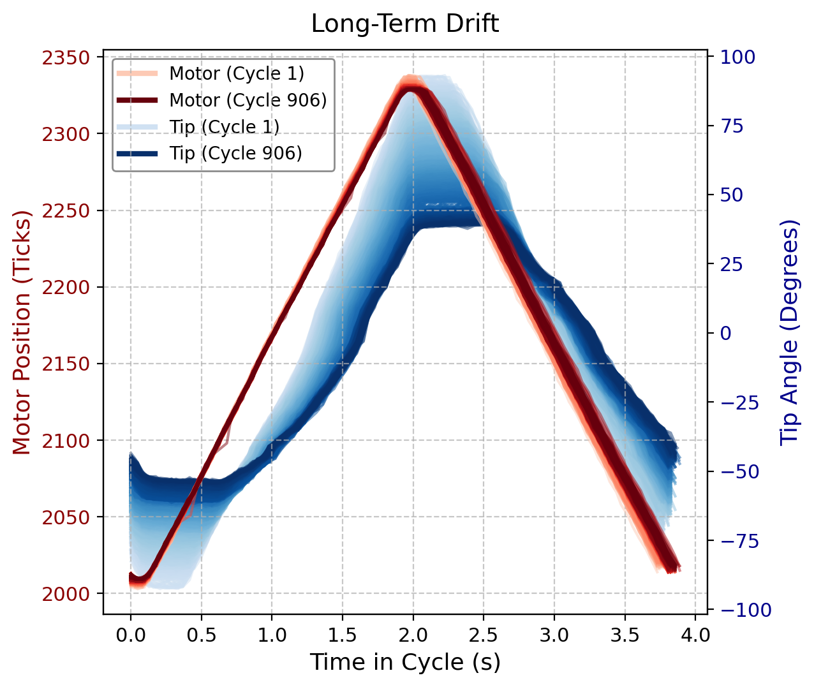

Robotic laryngoscopy
The problem
Diagnostic flexible laryngoscopy (DFL) is the first step in diagnosing voice disorders, airway obstructions, and head and neck cancer. An ear, nose, and throat (ENT) specialist typically performs it, passing an endoscope (a thin tube with a camera at its tip) through the nose to view the throat and vocal cords. More than 1.2 million DFLs are done each year in the US, but specialist access is limited: the average wait for an ENT appointment is 51 days, and 90% of ENTs practice in urban areas.

To solve this problem, I’m working with engineers at the UCLA Biomechatronics Lab and surgeons from UCLA Head and Neck Surgery to build an autonomous robotic DFL system. It is designed for non-specialist staff in primary or urgent care to load a standard commercial laryngoscope into the robot, which then navigates the nasal cavity on its own and records footage for an ENT specialist to review later. Three Dynamixel servo motors reproduce what a clinician does by hand: insertion and retraction, axial roll, and distal tip pitch.

My role
I led the mechanical design, wrote the calibration procedure and safety limits, and ran the system’s force and durability testing. On the mechanical side, I defined the three degrees of freedom from concept, including how each would engage the scope and the speeds, ranges of motion, and forces it would need, then sized the motors, selected the belt-driven linear rail, and designed nearly all custom parts: a clip-on scope mount, a mechanism that engages the scope’s scroll wheel to control tip pitch, motor mounts, and an enclosure with an E-stop. My calibration procedure finds each axis’s hard stops and sets software limits on motor position, velocity, current, and temperature.

Testing and results
For our FDA and IRB submissions, I measured the system's positional and velocity limits, then used an ATI Nano 25 six-axis load cell to measure peak tip contact forces at maximum software-limited speed. Across 77 contacts, mean peaks were 0.26 N for insertion, 0.24 N for roll, and 0.47 N for pitch, with a maximum of 0.85 N. That is over seven times lower than published forces for damaging the most fragile bone in the nasal region.


To test durability, I ran all three axes through their full range for one hour, about 900 cycles, which simulates worst-case loading from roughly 30 procedures. No mechanical failures occurred, and the motors that drive insertion and rotation showed virtually no drift or variance in their position, velocity, and current profiles.
Tip pitch, on the other hand, works through tendons inside the laryngoscope our robot holds, so motor position does not directly give tip angle. I used an ArUco marker and webcam to measure tip angle independently of the motor and characterized the system’s hysteretic behavior over both short and long time scales. Short term, I measured hysteresis loops at six amplitudes from ±10° to ±90° (Figure 1). Backlash grew linearly with amplitude, from 4.2° to 7.3° of scroll wheel travel (R² = 0.991), meaning it can be compensated for in software.


Long term, the same hysteretic behavior worsened over the hour (Figure 2). Tip range of motion fell to 51% of its starting value, the delay between motor and tip doubled from 0.21 s to 0.43 s, and RMS motor current rose 64%. To find the source, I swapped the motor and the trend remained, then ran without the scope and it disappeared. That isolated the wear to the commercial scope’s tendon mechanism, not our robot. The robot held up for the full hour, but the scope did not: in cadaver work we replace it about every 10 procedures. In patients this does not come up, since the scope is single-use clinically.
Autonomy and status
For autonomous navigation, we developed a computer vision model trained on nasal endoscopy video from 250 patients that identifies anatomical features and steers the robot toward the center of the airway. The system has been tested in phantom models, shown in the video, and in 10 fresh cadaveric specimens, successfully reaching the pharynx in all 10. I am a co-inventor on the provisional patent Robotic Platform for Flexible Endoscopy and a co-author on an in-progress manuscript on the cadaver results. The project has won $69K from several UCLA business competitions, which will go toward launching a startup.